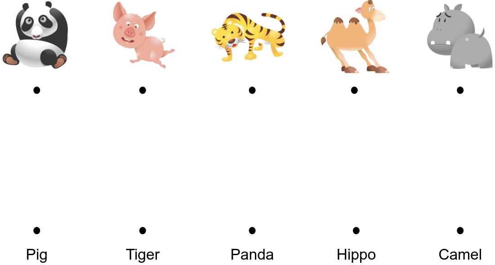
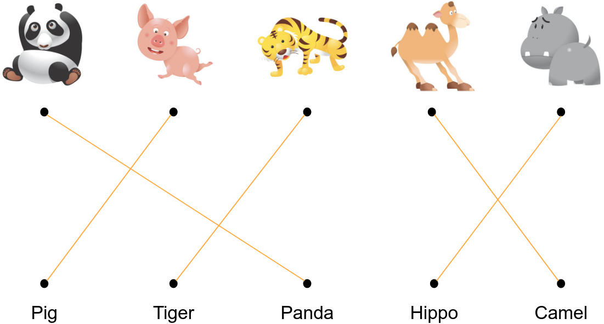

Seminar 24: CSE 842
Sepehr Dehdashtian
Seminar 24: CSE 842
Sepehr Dehdashtian
Learning Transferable Visual Models From Natural Language Supervision
Radford et al. (ICML 2021)
Contrastive Learning
 